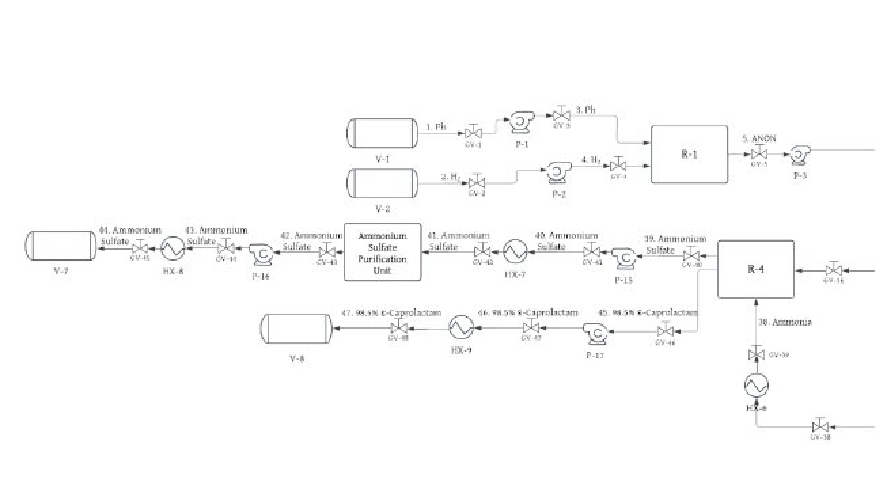
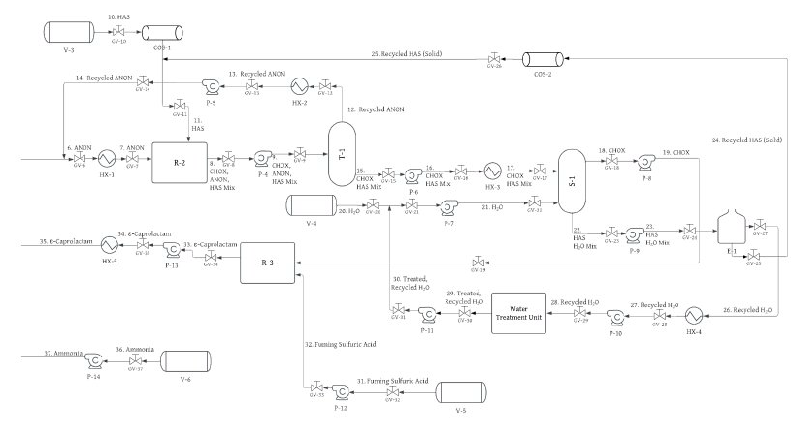

Unit Operations
Process Design
Detailed description of each reactor, separation unit, and recycle loop in the ε-caprolactam production pathway from biomass-derived phenol.
Reactor 1
Phenol Hydrogenation → Cyclohexanone
Reaction: Phenol + H₂ → Cyclohexanone | Reactor type: Plug Flow Reactor (PFR) | Catalyst: Palladium on carbon | Conditions: 450 °C, 1–2 bar
The process begins with biomass-derived phenol fed as a vapor alongside hydrogen gas into a plug flow reactor packed with palladium catalyst. A PFR made the most sense here since it allows catalytic packing, achieves high conversion in a single pass, and handles continuous vapor-phase operation well at industrial scale. Ruthenium was looked at early on but ruled out pretty quickly because of cost. Nickel was also evaluated — while cheaper, its lower selectivity ultimately produced a negative NPV over the plant lifetime.
Palladium ended up being the clear winner due to its high selectivity toward cyclohexanone (rather than the over-hydrogenation product, cyclohexanol). The Aspen simulation assumed 35 kg of palladium catalyst with a particle density of 1.2 g/cm³. That said, a pilot study is still needed to pin down optimal reactor pressures, since the theoretical literature values didn't fully converge in Aspen.
Process Flow Diagram
Figure 1A: Hydrogenation & ammonia treatment

Figure 1A: PFD showing the hydrogenation reactor (R-1), ammonia reactor (R-4) used to treat the final product, and the ammonium sulfate purification unit (Ph: phenol, H₂: hydrogen, ANON: cyclohexanone)
Reactor 2 + Separations
Oximation, Distillation & Phase Separation
Reaction: Cyclohexanone + Hydroxylamine sulfate → Cyclohexanone oxime | Reactor type: CSTR | Conditions: 85 °C, 1–2 bar
Cyclohexanone (ANON) from R-1 is fed into a CSTR along with hydroxylamine sulfate (HAS). A CSTR was the right call here since it keeps concentration and temperature uniform throughout the reactor — critical for minimizing the formation of cyclohexanol as a side product.
The effluent — a mixture of cyclohexanone oxime (CHOX), unreacted cyclohexanone, and hydroxylamine sulfate — enters a distillation column (T-1). Because cyclohexanone is significantly more volatile than the other components, it exits as the overhead vapor and is recycled back to R-2. The distillation column was configured with a partial condenser (not total) to produce a vapor overhead and a liquid bottoms, which fixed an issue we ran into during Aspen modeling.
The bottoms stream (CHOX + HAS) is fed with water into a centrifugal phase separator (S-1). Hydroxylamine sulfate dissolves readily in water while cyclohexanone oxime does not — this solubility difference enables clean separation. The HAS/water mixture then passes through an evaporator (E-1) to separate and recycle both components independently, which cuts down on both waste and raw material costs.
Process Flow Diagram
Figure 1B: Oximation, Beckmann & water treatment

Figure 1B: PFD showing the CHOX formation reactor (R-2), CHOX separations units (T-1 and S-1), evaporator used to obtain recycled HAS (E-1), water treatment unit, and the Beckmann rearrangement reactor (R-3); HAS: hydroxylamine sulfate, ANON: cyclohexanone, CHOX: cyclohexanone oxime
Reactor 3
Beckmann Rearrangement → ε-Caprolactam
Reaction: Cyclohexanone oxime + H₂SO₄ → ε-Caprolactam | Reactor type: CSTR | Conditions: 90 °C, 1–2 bar | Reagent: Fuming sulfuric acid (oleum)
Purified CHOX reacts with fuming sulfuric acid (oleum — a mixture of H₂SO₄ and SO₃) in a CSTR. The acid environment protonates the oxime nitrogen, enabling the Beckmann rearrangement — a carbon-nitrogen migration that opens the cyclohexanone oxime ring into the seven-membered lactam ring of ε-caprolactam.
This step was honestly the trickiest part of the simulation. Due to the complexity of oleum chemistry (H₂SO₄ + SO₃ reacting with water to form H₃O⁺), Aspen would crash when all the reactions were loaded into one reactor. The fix was to split R-3 into three CSTRs in series (R-3-1, R-3-2, R-3-3), with the chemistry spread across all three. Also, since solid kinetic data for each individual CSTR was hard to find in the literature , the same kinetic parameters were applied to all of them, which is a known simplification.
Reactor 4 + Purification
Ammonia Treatment → 98.5% Pure Product
Reaction: ε-Caprolactam (crude) + NH₃ → Purified caprolactam + (NH₄)₂SO₄ | Reactor type: CSTR | Conditions: 100 °C, 1–2 bar
The crude caprolactam coming out of R-3 still has residual sulfuric acid, unreacted CHOX, and some trace minerals that need to go. Adding ammonia in a final CSTR takes care of all of that, and the CSTR keeps things well-mixed so the neutralization is thorough.
The neutralization produces ammonium sulfate ((NH₄)₂SO₄) as a co-product. Rather than sending it to waste, it gets purified to fertilizer-grade standards and sold, which makes for a nice extra revenue stream. The final caprolactam product achieves ≥ 98.5% purity, meeting industry standards for nylon-6 polymerization feedstock.
Stream Summary
Table 1: Stream conditions (theoretical PFD)
All 47 streams corresponding to Figure 1A and Figure 1B. Abbreviations: ANON = cyclohexanone, CHOX = cyclohexanone oxime, HAS = hydroxylamine sulfate, FSA = fuming sulfuric acid, AS = ammonium sulfate. Mass flow rates with species breakdowns are available on the Simulation page.
| # | Chemical Species | Temp (°C) | Pressure (bar) |
|---|---|---|---|
| 1 | Phenol | 20 | 1 |
| 2 | Hydrogen | 20 | 1 |
| 3 | Phenol | 20 | 1 |
| 4 | Hydrogen | 20 | 1 |
| 5 | ANON | 450 | 2 |
| 6 | ANON | 450 | 2 |
| 7 | ANON | 85 | 2 |
| 8 | ANON, CHOX, HAS mix | 85 | 2 |
| 9 | ANON, CHOX, HAS mix | 85 | 2 |
| 10 | HAS | 25 | 1 |
| 11 | HAS | 25 | 1 |
| 12 | ANON | 160 | 1 |
| 13 | ANON | 450 | 1 |
| 14 | ANON | 450 | 1 |
| 15 | CHOX, HAS mix | 160 | 1 |
| 16 | CHOX, HAS mix | 160 | 1 |
| 17 | CHOX, HAS mix | 95 | 1 |
| 18 | CHOX | 95 | 1 |
| 19 | CHOX | 95 | 1 |
| 20 | Water | 25 | 1 |
| 21 | Water | 25 | 1 |
| 22 | HAS, water mix | 95 | 1 |
| 23 | HAS, water mix | 95 | 1 |
| 24 | HAS, water mix | 100 | 1 |
| 25 | HAS, water mix | 100 | 1 |
| 26 | Water | 100 | 1.3 |
| 27 | Water | 25 | 1 |
| 28 | Water | 25 | 1 |
| 29 | Water | 25 | 1 |
| 30 | Water | 25 | 1 |
| 31 | FSA | 25 | 1 |
| 32 | FSA | 25 | 1 |
| 33 | Caprolactam | 90 | 1 |
| 34 | Caprolactam | 90 | 1 |
| 35 | Caprolactam | 100 | 1 |
| 36 | Ammonia | −33 | 1 |
| 37 | Ammonia | −33 | 1 |
| 38 | Ammonia | 100 | 1 |
| 39 | AS | 100 | 2 |
| 40 | AS | 100 | 2 |
| 41 | AS | 85 | 1 |
| 42 | AS | 60 | 1 |
| 43 | AS | 60 | 1 |
| 44 | AS | 25 | 1 |
| 45 | Caprolactam | 100 | 1 |
| 46 | Caprolactam | 100 | 1 |
| 47 | Caprolactam | 85 | 1 |
Material Balances
Table 2: Mass balance (theoretical PFD)
Mass flow rates for all 47 streams corresponding to the theoretical PFD in Figure 1. Flow rates in kg/s and were determined using Aspen Plus based on proposed reaction pathways, operating conditions, and separation steps. Abbreviations: ANON = cyclohexanone, CHOX = cyclohexanone oxime, HAS = hydroxylamine sulfate, FSA = fuming sulfuric acid, AS = ammonium sulfate.
| # | Chemical Species | Temp (°C) | P (bar) | Species flow rates (kg/s) | Total (kg/s) |
|---|---|---|---|---|---|
| 1 | Phenol | 20 | 1 | single component | 16.9 |
| 2 | Hydrogen | 20 | 1 | single component | 0.7 |
| 3 | Phenol | 20 | 1 | single component | 16.9 |
| 4 | Hydrogen | 20 | 1 | single component | 0.7 |
| 5 | ANON | 450 | 2 | single component | 17.6 |
| 6 | ANON | 450 | 2 | single component | 17.6 |
| 7 | ANON | 85 | 2 | single component | 17.6 |
| 8 | ANON, CHOX, HAS mix | 85 | 2 | ANON:1.87×10⁻⁷CHOX:20.3HAS:8.4 |
31.9 |
| 9 | ANON, CHOX, HAS mix | 85 | 2 | ANON:1.87×10⁻⁷CHOX:20.3HAS:8.4 |
31.9 |
| 10 | HAS | 25 | 1 | single component | 14.4 |
| 11 | HAS | 25 | 1 | single component | 14.4 |
| 12 | ANON | 160 | 1 | single component | 13.6 |
| 13 | ANON | 450 | 1 | single component | 13.6 |
| 14 | ANON | 450 | 1 | single component | 13.6 |
| 15 | CHOX, HAS mix | 160 | 1 | CHOX:20.3HAS:4.1 |
26.1 |
| 16 | CHOX, HAS mix | 160 | 1 | CHOX:20.3HAS:4.1 |
26.1 |
| 17 | CHOX, HAS mix | 95 | 1 | CHOX:20.3HAS:4.1 |
26.1 |
| 18 | CHOX | 95 | 1 | single component | 20.3 |
| 19 | CHOX | 95 | 1 | single component | 20.3 |
| 20 | Water | 25 | 1 | single component | 1.5 |
| 21 | Water | 25 | 1 | single component | 1.5 |
| 22 | HAS, water mix | 95 | 1 | HAS:8.4Water:1.7 |
10.2 |
| 23 | HAS, water mix | 95 | 1 | HAS:8.4Water:1.7 |
10.2 |
| 24 | HAS, water mix | 100 | 1 | HAS:8.4Water:1.7 |
10.2 |
| 25 | HAS, water mix | 100 | 1 | HAS:8.4Water:1.7 |
10.2 |
| 26 | Water | 100 | 1.3 | single component | 1.7 |
| 27 | Water | 25 | 1 | single component | 1.7 |
| 28 | Water | 25 | 1 | single component | 1.7 |
| 29 | Water | 25 | 1 | single component | 1.7 |
| 30 | Water | 25 | 1 | single component | 1.7 |
| 31 | FSA | 25 | 1 | single component | 11.6 |
| 32 | FSA | 25 | 1 | single component | 11.6 |
| 33 | Caprolactam | 90 | 1 | single component | 15.7 |
| 34 | Caprolactam | 90 | 1 | single component | 15.7 |
| 35 | Caprolactam | 100 | 1 | single component | 15.7 |
| 36 | Ammonia | −33 | 1 | single component | 1.4 |
| 37 | Ammonia | −33 | 1 | single component | 1.4 |
| 38 | Ammonia | 100 | 1 | single component | 1.4 |
| 39 | AS | 100 | 2 | single component | 3.7 |
| 40 | AS | 100 | 2 | single component | 3.7 |
| 41 | AS | 85 | 1 | single component | 3.7 |
| 42 | AS | 60 | 1 | single component | 3.7 |
| 43 | AS | 60 | 1 | single component | 3.7 |
| 44 | AS | 25 | 1 | single component | 3.7 |
| 45 | Caprolactam | 100 | 1 | single component | 19.3 |
| 46 | Caprolactam | 100 | 1 | single component | 19.3 |
| 47 | Caprolactam | 85 | 1 | single component | 19.3 |
Flow rates were determined using Aspen Plus. Temperature and pressure values are based on literature. Future work should verify these values support efficient and reliable process operation at the design scale.
Energy & Utilities
Heat Exchanger Network
The process includes 9 floating-head heat exchangers and 1 process evaporator. Using pinch analysis, a heat exchanger network (HEN) was designed that recovers latent heat from the evaporator's steam output and reintegrates it as preheat for feed streams.
Before HEN
Annual utility cost: $3,330,000
After HEN
Annual utility cost: $2,440,000
Pumping power
17 centrifugal pumps, $71,220/year in electricity